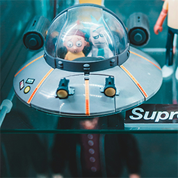
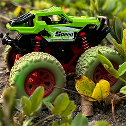

Toy Gallary
Step into our Toy Gallery and explore a timeless collection of childhood favorites that continue to spark imagination and joy. Our classic robot toy stands tall with shiny metallic limbs and blinking eyes, ready to defend the universe or simply bring a smile. It's a perfect mix of nostalgia and fun, reminding us of old-school sci-fi adventures. Right next to it is the charming vintage doll, dressed in delicate fabric clothes and full of personality. Whether it’s tea time, storytelling, or playing house, dolls have always been a child’s first friend and confidant.
Alongside these character-based favorites are the building blocks of creativity — quite literally. Our set of wooden blocks invites open-ended play, allowing kids to stack, build, and topple their ideas into reality. They're beautifully crafted, safe, and perfect for developing motor skills and imagination. And of course, no classic toy shelf would be complete without the beloved toy train. With its bold colors, smooth wheels, and connected cars, it sparks hours of endless journeys through make-believe towns and countryside. Together, these toys represent the heart of play — simple, engaging, and full of storytelling potential.
Retro Space Explorer
Blast off into imagination with this classic flying saucer toy. Its clear dome, tiny pilot, and futuristic design make it perfect for stories about space missions, alien planets, and daring adventures beyond the stars.

Hero of the Toy Shelf
This colorful character brings energy, fun, and nostalgia to any collection. With a bright outfit, friendly face, and action-ready pose, it is a great centerpiece for playful scenes and display setups.
Poké Ball Adventure
This iconic ball is made for fans who love collecting, battling, and exploring. Whether used as a display piece or part of a themed toy setup, it adds a fun sense of mystery and adventure.
Off-Road Monster Truck
Built for rough terrain and big imagination, this green monster truck looks ready to climb, race, and explore. Its oversized tires and rugged design make it perfect for outdoor play scenes and action-packed adventures.
